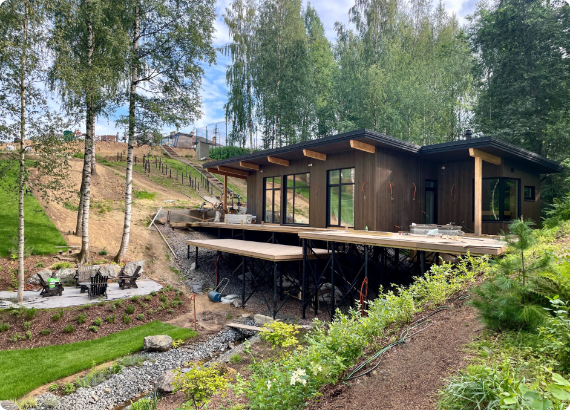

О нас (h1)
о нас
Али
Всем привет. Меня зовут Али Баймурзаев, я руководитель
FathersHouse. Совместно с командой моих единомышленников мы занимаемся загородным
строительством уже 8 лет

Но началось все 16 лет назад когда в 2007 г я окончил СПбГТУ Петра Великого (Политех),
инженерно-строительный факультет.
После окончания университета я все время занимался стройкой. Доводилось даже принимать участие в строительстве гидроэлектростанции.
Это было увлекательно, но очень далеко от родного Санкт-Петербурга, поэтому решил поработать в жилищном многоквартирном строительстве и начал с вой пусть с простого прораба в Строительном тресте – там ковалась моя строительная выправка и была привита любовь к порядку на стройплощадке, которую я испытываю по сей день.
Спустя годы работы в найме, я решил реализовать свои амбиции на поприще частного домостроения и поэтому Вы читаете эти строки.
В своей работе я всегда предлагаю клиентам высококачественные услуги в области строительства, активно взаимодействую с заказчиками, выслушиваю их требования и пожелания. Уделяю особое внимание деталям и современным технологиям строительства.
Всегда стремлюсь к долгосрочным отношениям с заказчиками, основанным на доверии и взаимовыгодном сотрудничестве.
А так же лично оказываю строительно-психологическую поддержку.
После окончания университета я все время занимался стройкой. Доводилось даже принимать участие в строительстве гидроэлектростанции.
Это было увлекательно, но очень далеко от родного Санкт-Петербурга, поэтому решил поработать в жилищном многоквартирном строительстве и начал с вой пусть с простого прораба в Строительном тресте – там ковалась моя строительная выправка и была привита любовь к порядку на стройплощадке, которую я испытываю по сей день.
Спустя годы работы в найме, я решил реализовать свои амбиции на поприще частного домостроения и поэтому Вы читаете эти строки.
В своей работе я всегда предлагаю клиентам высококачественные услуги в области строительства, активно взаимодействую с заказчиками, выслушиваю их требования и пожелания. Уделяю особое внимание деталям и современным технологиям строительства.
Всегда стремлюсь к долгосрочным отношениям с заказчиками, основанным на доверии и взаимовыгодном сотрудничестве.
А так же лично оказываю строительно-психологическую поддержку.
Несколько фактов о том как мы работаем:
- 1 Мы не строим десятки домов за сезон а вместо этого лично контролируем все процессы. Качество для нас в безусловном приоритете над количеством
- 2 У нас нет текучки кадров У нас по-настоящему дружный, сложившийся за годы коллектив единомышленников. Мы дорожим своей репутацией и не можем позволить себе случайных наемных рабочих.
- 3 Оказываем действительно комплексную услугу по строительству под ключ Начиная от помощи в выборе или разработке проекта и заканчивая финишной отделкой. Все специализированные работы на наших стройках выполняют узконаправленные специалисты.
- 4 Мы строим по самым распространенным технологиям в Северо-Западном регионе, прошедшими проверку временем (Газобетон, Клееный брус, Каркасная технология). В то же время мы охотно перенимаем опыт скандинавских соседей и активно используем его на своих стройках (УШП, УФФ, Superground);
- 5 У нас нет задачи построить заказчику холодную коробку дома, непригодную для жилья Мы стараемся помочь Вам хладнокровно оценить свои возможности и исходя из них получить полностью законченный и пригодный для комфортного проживания дом в обозримом будущем;
- 6 У нас нет менеджеров по продажам, и офисов на выставках недвижимости, т. к. в конечном счете эти затраты ложатся на плечи заказчиков. Мы за принцип разумной экономии, а высвободившиеся средства лучше потратить на увеличение качества продукта
- 7 Мы любим то, что мы делаем и поэтому бесплатно готовы оказать Вам консультацию на любой стадии вашей стройки
- 8 Мы осуществляем работы по договору как юр. лицо и даем гарантию на все выполненные работы
Процесс строительства дома
Оценка общего бюджета
На первой встрече при наличии участка мы сможем оценить бюджет вашего
строительства с точностью 20 %
1 день
Архитектурный проект
Разрабатываем архитектурный проект дома и генплан с учетом положения строений
на участке, ориентации по сторонам света, предпочтений в экстерьере и в рамках
обозначенного бюджета. В составе проекта содержится вся информация для
составления сметы на наземную часть дома.
2-6 недель
Смета строительства
Составляем предварительную смету на строительство фундамента и теплый контур
3-5 дней
Договор подряда
Составляем договор подряда, в состав которого выполняются изыскательные работы
(топосъемка и геология), рабочая документация на фундамент (КЖ) и на дом (КД
или КР).
1-4 недели
Строительство фундамента
На этом этапе помимо фундамента выполняем большую часть земельных работ:
организация вьезда на участок, прокладка наружных сетей (водоропровод,
питающий кабель, дренаж, ливневая канализация), устанавливаем канализационную
станцию.
1 месяц
Строительство теплого контура
Строим полностью законченный снаружи дом со всеми наружными системами:
водостоки, террассы и их ограждения, окна, двери.Внутри дома: утепление
наружных стен и крыши, герметичный контур пароизоляции. В заключение проводим
Тепловизионное обследование.
2-4 месяца
Дизайн-проект интерьера + Ландшафтный эскиз*
обязательно при отделке нашей командой
Чтобы к моменту начала отделочных работ у Вас уже был готов дизан-проект интерьера, необходимо заняться им уже на этапе подписания Договора подряда. Можно привлечь своего дизайнера или выбрать из нашей команды
На основе Ген. плана разрабатываем планировочное решение посадок и дополнительных строений на участке, чтобы по возможности учесть их на этапе прокладки наружных сетей.
Чтобы к моменту начала отделочных работ у Вас уже был готов дизан-проект интерьера, необходимо заняться им уже на этапе подписания Договора подряда. Можно привлечь своего дизайнера или выбрать из нашей команды
На основе Ген. плана разрабатываем планировочное решение посадок и дополнительных строений на участке, чтобы по возможности учесть их на этапе прокладки наружных сетей.
1 месяц
Проект вентиляции
Разрабатываем проект вентиляции, чтобы смонтировать воздуховоды до начала
отделочных работ.
1 месяц
Договор на внутреннюю отделку
Составляем смету на основании разработанного дизайн-проекта
1-2 недели
Монтаж инженерных сетей
Монтаж воздуховодов, вентиляции, электрики, ГВС-ХВС, Обустройство котельной
5-8 недель
Отделка:
Предчистовая отделка стен, пола и потолков, малярные работы (гипрок, стяжки
пола, штукатурка, шпаклевка)
+
Чистовая отделка, укладка напольного покрытия, установка дверей, подоконников, установка светильников и розеток, установка сантехники.
+
Чистовая отделка, укладка напольного покрытия, установка дверей, подоконников, установка светильников и розеток, установка сантехники.
4-8 недель
Если смотреть на вещи реально, то на строительство дома с внутренней отделкой стоит
заложить не меньше года с учетом проектирования и аппетитов, которые приходят во
время еды
Область для ранжируемого текста (скроется).
"Проекты загородных домов" представляют собой коллекцию дизайнов и планировок для строительства жилья за пределами города. Эти проекты включают в себя разнообразные стили и архитектурные решения, чтобы соответствовать различным потребностям и предпочтениям будущих владельцев. Они могут варьироваться от небольших уютных коттеджей до роскошных вилл с большими площадями и современными удобствами. Проекты загородных домов обычно учитывают природные особенности местности, климатические условия и потребности семьи, чтобы создать комфортное и функциональное пространство для жизни и отдыха.
"Проекты загородных домов" представляют собой коллекцию дизайнов и планировок для строительства жилья за пределами города. Эти проекты включают в себя разнообразные стили и архитектурные решения, чтобы соответствовать различным потребностям и предпочтениям будущих владельцев. Они могут варьироваться от небольших уютных коттеджей до роскошных вилл с большими площадями и современными удобствами. Проекты загородных домов обычно учитывают природные особенности местности, климатические условия и потребности семьи, чтобы создать комфортное и функциональное пространство для жизни и отдыха.